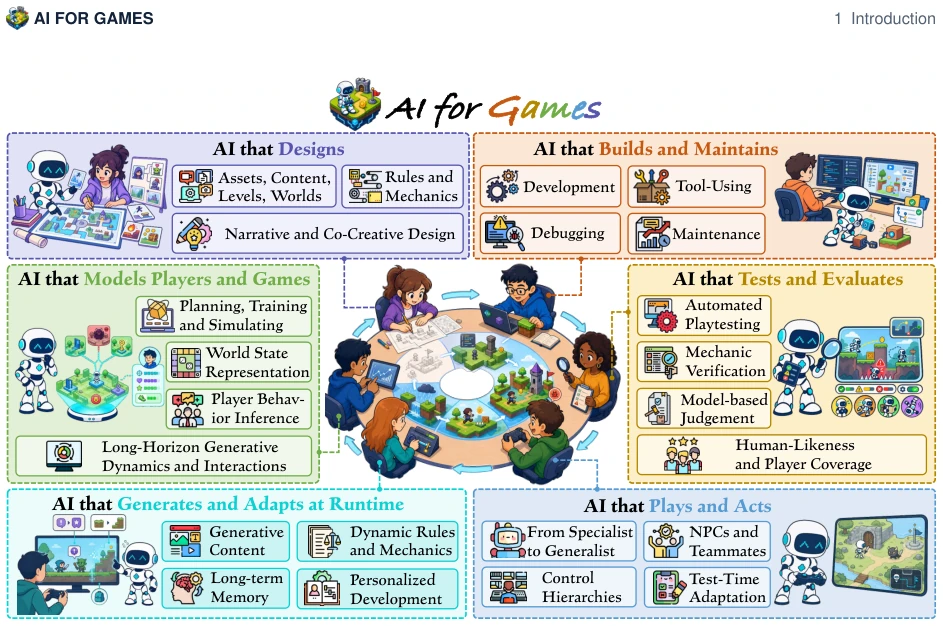
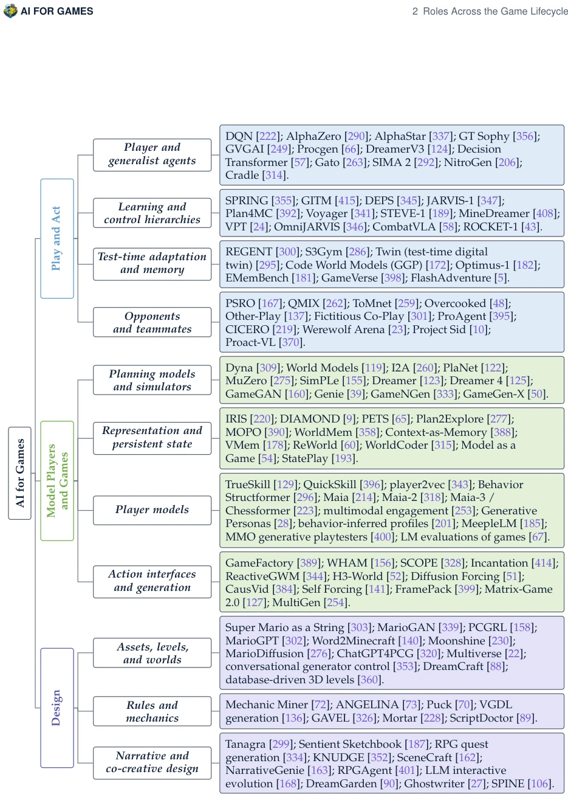
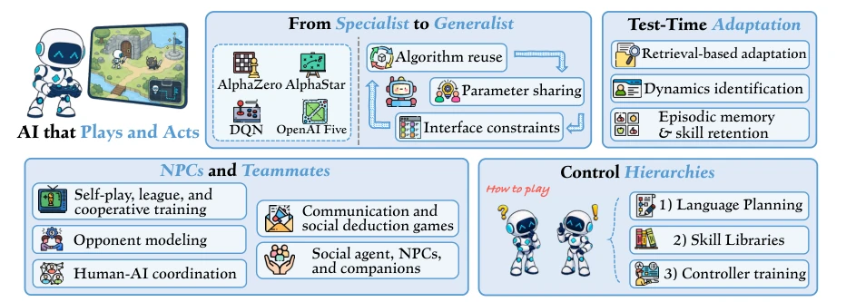
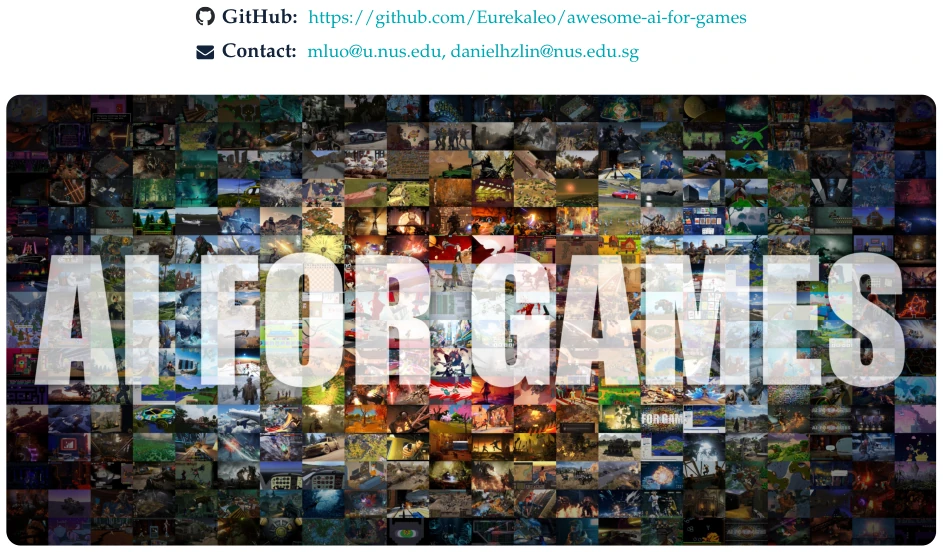
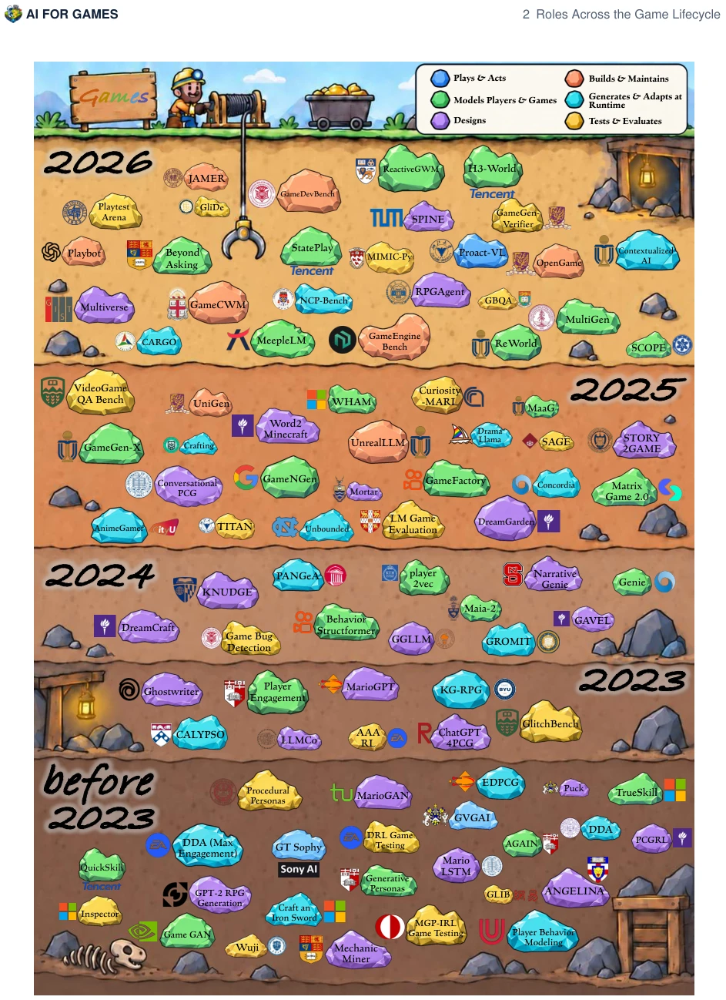
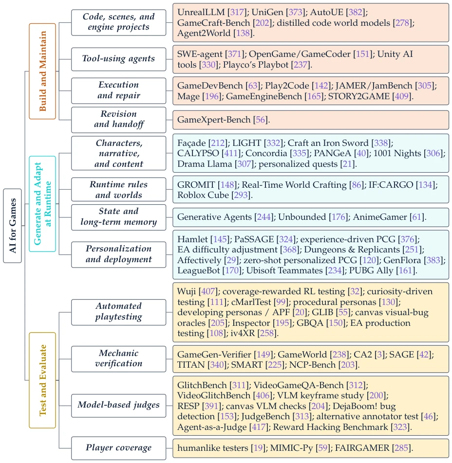
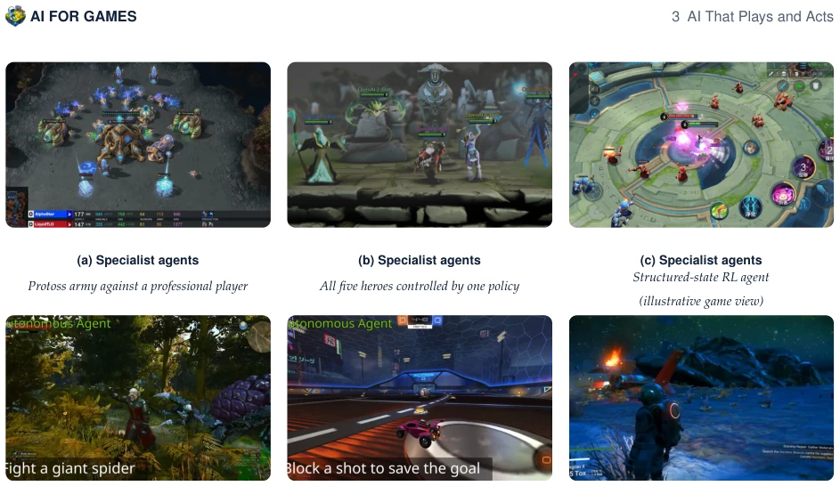
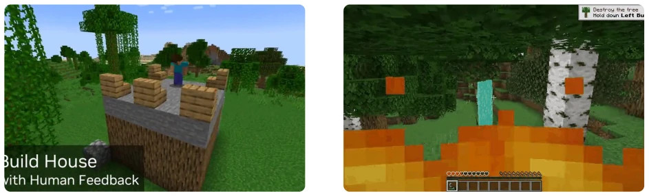
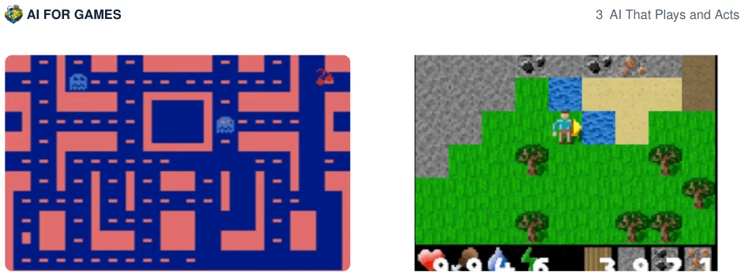
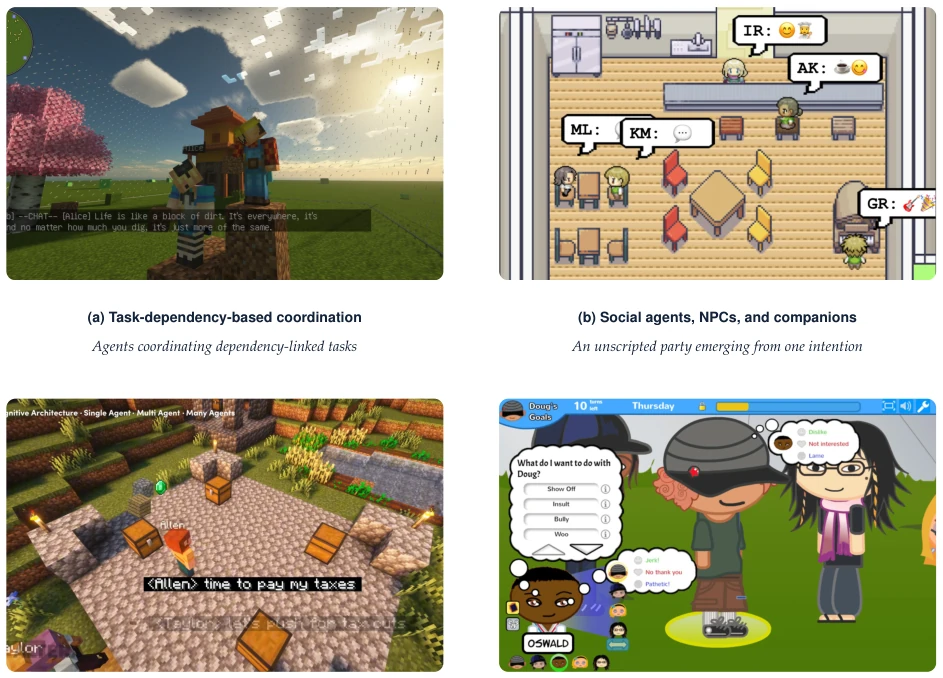

这篇综述像给游戏 AI 界做了个全身 CT，把 Foundation Model 时代的玩法梳理得明明白白。亮点在于把“玩、建模、设计、构建、运行时、测试”六类任务串起来了，不再各说各话，试图建立统一的证据标准。但毒舌一点，这文章其实是在“倒苦水”：虽然大模型能写代码、能生成关卡，但跨游戏迁移能力基本是画饼，大部分成果还是被锁死在特定引擎或规则里。作者自己也没造新轮子，而是忙着给别人的成果贴标签，证据链薄弱，很多 claim 全靠“据说”。不过，能指出“运行时一致性”和“玩家建模可靠性”是硬骨头，这点还算诚实。它揭示了当前研究“重训练轻验证”的通病，对于想入坑的开发者来说，既是地图也是避坑指南。
This review acts like a full-body CT scan for the game AI community, clarifying the gameplay of the Foundation Model era clearly. The highlight lies in connecting the six categories of tasks: "Play, Model, Design, Build, Runtime, Test", no longer talking past each other, attempting to establish unified evidence standards. But to be a bit sharp-tongued, this article is actually "venting grievances": although large models can write code and generate levels, cross-game transferability is basically an empty promise, most results are still locked within specific engines or rules. The author did not reinvent the wheel, but was busy labeling others' results, the evidence chain is weak, many claims rely entirely on "allegedly". However, pointing out that "runtime consistency" and "player modeling reliability" are hard bones is honest enough. It reveals the common disease of current research "heavy training, light verification", for developers wanting to enter the field, it is both a map and a pit-avoidance guide.
研究动机Motivation
现有游戏 AI 研究往往各自为政，玩游戏的、做设计的、搞测试的互不往来。虽然 Foundation Models 火了，但大家不知道哪些能力能跨游戏复用，哪些只是过拟合。比如 AlphaStar 在星际里无敌，换个游戏可能连门都找不到。这篇论文想解决的就是“孤岛效应”，厘清不同任务间的界限和联系。引用 Gallotta et al. (2024) 和 Yannakakis and Togelius (2025) 的综述虽然广，但缺乏对输出物流转的关注。作者指出，很多工作只关注单一角色的性能，忽略了下游任务（如测试或运行时适配）的实际效果验证。这导致大量“玩具”无法落地，无法区分是模型不行还是环境太特异。
Existing game AI research often acts independently, players, designers, and testers do not interact. Although Foundation Models are hot, everyone doesn't know which capabilities can be reused across games and which are just overfitting. For example, AlphaStar is invincible in StarCraft, but in another game might not even find the door. This paper aims to solve the "island effect", clarifying boundaries and connections between different tasks. Citing Gallotta et al. (2024) and Yannakakis and Togelius (2025) reviews are broad, but lack attention to output flow. The author points out that many works only focus on single role performance, ignoring downstream task (like testing or runtime adaptation) actual effect verification. This leads to many "toys" failing to land, unable to distinguish if the model is bad or the environment is too specific.

Figure 2: Six uses of AI output around an executable, player-facing game. The connectors indicate selective inputs and feedback rather than a mandatory pipeline.
The core of the method is constructing a six-role classification (Play, Model, Design, Build, Runtime, Test), rather than classifying by model architecture. On the Pipeline, it does not train new models, but organizes the input/output flows of existing systems. For example, Play role focuses on action quality, Model role focuses on prediction quality. The innovation lies in "cross-role connection" analysis, e.g., how trajectory data trains world models, how design specs drive code implementation. It emphasizes "Boundary", distinguishing game-provided structure and AI-learned parts. For each role, it asks three questions: What does AI learn? Can capabilities transfer? Is evidence sufficient? This structure forces researchers to examine the actual use of outputs, not just training set scores. Additionally, the article details compares different interfaces (e.g., native control vs. semantic API) impact on generalization, pointing out SIMA and NitroGen systems share weights but control semantics differ hugely. It also organizes the evolution path from Specialist to Generalist, analyzes specific implementation differences of Hierarchical Planning and Test-Time Adaptation, providing a structured reference framework for subsequent research.

Figure 4: Taxonomy of AI for games with representative work. (a) Playing, modeling, and design. Each branch lists the systems, benchmarks, and environments of one survey subsection.
This paper has no traditional experiments, but a systematic review of existing benchmarks and evidence. It evaluates performance under environments like GVGAI, Procgen, DreamerV3. Finds "restricted games" (e.g., Atari) evaluation most standard, but "persistent state" and "runtime adaptation" lack verification. For example, SIMA and NitroGen show cross-game parameter sharing, but fine-grained control still relies on specific interfaces. Author points out, automated testing and player modeling evidence is weakest, many "intelligences" not verified by human representativeness. Ablation analysis reflects in distinguishing "algorithm reuse" and "parameter sharing", proving simple weight sharing does not equal generalization. The article also compares different interfaces (e.g., native control vs. semantic API) impact on generalization, pointing out SIMA and NitroGen systems share weights but control semantics differ hugely. It also organizes the evolution path from Specialist to Generalist, analyzes specific implementation differences of Hierarchical Planning and Test-Time Adaptation, providing a structured reference framework for subsequent research.

Figure 5: Research directions for AI that plays and acts: specialist-to-generalist policies, test-time adaptation, control hierarchies, and NPCs and teammates.
其他图片Other Figures

Figure 1: AI for Games in the foundation model era. The tiles are in-game frames from commercial and open-source games, research environments, and generative game systems reviewed in this survey.

Figure 3: Timeline of representative AI-for-games systems across the six roles. Selected systems, bench- marks, and methods reviewed in this survey are arranged by year and colored according to their primary role in our taxonomy.

Figure 4: Taxonomy of AI for games with representative work (continued). (b) Building, runtime generation and adaptation, and testing.

Figure 6: Specialist agents built for a single title (a–c) and policies whose parameters transfer across commercial games (d–f): (a) AlphaStar, StarCraft II (Vinyals et al., 2019); (b) OpenAI Five, Dota 2 (Berner et al., 2019); (c) Honor of Kings AI (Ye et al., 2020); (d) NitroGen, The Witcher 3 (Magne et al., 2026); (e) NitroGen, Rocket League (Magne et al., 2026); (f) SIMA 2, No Man’s Sky (SIMA Team et al., 2025).

Figure 7: An intention passing down the control hierarchy, from a stored skill (a) to a planner-selected target executed by the controller (b): (a) Voyager, Minecraft (Wang et al., 2023a); (b) ROCKET-1, Minecraft (Cai et al., 2025b).

Figure 8: Test-time adaptation by retrieving demonstrations for an unseen game (a) and by carrying episodic state through an episode (b): (a) REGENT, Ms. Pac-Man (Sridhar et al., 2025); (b) EMemBench, Crafter (Li et al., 2026b).

Figure 9: Task-dependency-based multi-agent coordination (a) and social agents whose behaviour emerges from interaction (b–d): (a) VillagerAgent, Minecraft (Dong et al., 2024); (b) Generative Agents, Smallville (Park et al., 2023); (c) Project Sid (PIANO), Minecraft (Altera. AL et al., 2024); (d) Comme il Faut, Prom Week (McCoy et al., 2013).